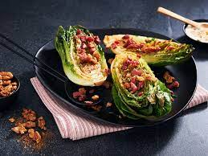

Charred Lettuce Wedge Salad

Charred Lettuce Wedge Salad with Blue Cheese Dressing & Walnuts
Robertsons Braai & Grill All-In-One is used twice in this fabulous summer salad: first to add a burst of flavour
to toasted walnuts,
and second to season crisp lettuce wedges that are quickly charred on the grill. Finish with
chopped chives and a creamy blue cheese dressing.
Ingredients
- 100 g walnuts
- 60 ml (4 Tbsp) olive oil
- 15 ml (1 Tbsp) Robertsons Braai & Grill All-In-One
- 4 romaine or gem lettuces heads
- 45 ml (3 Tbsp) olive oil
- 30 ml (2 Tbsp) Robertsons Braai & Grill All-In-One
- 125 ml (½ cup) Knorr blue cheese dressing
- 15 ml (1 Tbsp) chopped chives
- 150 g (½ cup) crispy bacon bits (optional)
Steps/Instructions
- Preheat the oven to 180 °C.
- Put the walnuts into a bowl with 15ml (1 Tbsp) of the olive oil and the Robertsons Braai & Grill All-In-One.
Toss well, then tip onto a baking tray. Bake in the oven until the nuts are toasted (about 8 minutes).
Set aside to cool, then roughly chop them.
- Preheat your grill to high.
- Cut the lettuce heads lengthways in half.
- Brush the cut sides with the remaining 45ml (3 Tbsp) olive oil, then sprinkle over the Robertsons Braai &
Grill All-In-One.
- Place the lettuce halves on the grill, cut side down. Grill until nicely charred.
It is important that the grill is very hot - the lettuce wedges should not cook for too long in order to
retain their crispness.
followed by the toasted walnuts, chopped chives and (optional) crispy bacon bits.